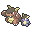

8月30日
【ORASトリプル】ガルニンフサンダー体験記
ガルーラ＠メガストーン（きもったま）
ねこだまし／すてみタックル／けたぐり／ふいうち
ニンフィア＠こだわりメガネ（フェアリースキン）
ハイパーボイス／ムーンフォース／シャドーボール／はかいこうせん
サンダー電＠たべのこし（プレッシャー）
１０まんボルト／ひかりのかべ／おいかぜ／ほえる
ランドロス霊＠こだわりスカーフ（いかく）
じしん／いわなだれ／ばかぢから／とんぼがえり
ギルガルド＠いのちのたま（バトルスイッチ）
シャドーボール／ラスターカノン／ワイドガード／キングシールド
ファイアロー＠こだわりハチマキ（はやてのつばさ）
ブレイブバード／フレアドライブ／とんぼがえり／よこどり
ぽけっとふぁんくしょん！経緯
相手のメガガルーラに勝てないのでガルーラを使って弱点を調べることにしました。まずはパデックさんの動画で使われていたガルニンフサンダーを参考に組んでみることに。
始めはこんな感じでした。
ガルーラ＠メガストーン（きもったま）
ねこだまし／すてみタックル／けたぐり／ふいうち
ニンフィア＠こだわりメガネ（フェアリースキン）
ハイパーボイス／ムーンフォース／シャドーボール／はかいこうせん
サンダー電＠ラムのみ（プレッシャー）
１０まんボルト／ひかりのかべ／おいかぜ／はねやすめ
ランドロス霊＠とつげきチョッキ（いかく）
じしん／いわなだれ／はたきおとす／とんぼがえり
ギルガルド＠いのちのたま（バトルスイッチ）
シャドーボール／ラスターカノン／ワイドガード／キングシールド
サザンドラ＠こだわりスカーフ（ふゆう）
あくのはどう／りゅうせいぐん／だいちのちから／ちょうはつ
ぽけっとふぁんくしょん！更に使い込むとパーティがほぼ中速しかいない点が辛かったので霊獣ランドロスをスカーフ型に変更。
最後にサンダーの持ち物と技をそれぞれラム→食べ残し、羽休め→吠えるに変更。
とりあえずこの記事の一番上の形に収まりました。
個別解説
メガガルーラ＠メガストーン（おやこあい・ようき）
181(4)-177(252)-120( )-×( )-120( )-167(252)
ねこだまし／すてみタックル／けたぐり／ふいうち
ぽけっとふぁんくしょん！とりあえず猫騙しを相手を止める、S100以下は捨て身タックルで倒す、速いポケモンは不意打ちで倒す。相手を「動かさない」ということに関しては別格の強さを誇る、縛りの王。
格闘技がグロウパンチではなく蹴手繰りなのも、努力値も技も耐久より火力を重視しているのも、まず相手を(倒して)止めるということに命をかけているため。
序盤にメガガルーラで荒らして引っ込め、終盤にまた出して猫騙しや不意打ちで相手を刈り取るプレイングが非常に強力なため「序盤で使い捨てない」ということを若干意識してました。(剣盾のウーラオスでも同じことしてたなぁ)
使ってみてわかったメガガルーラの弱点は、「まもる」と「ギルガルド」。
「まもる」は、範囲技が強力なメガと違い相手に「まもる」されてしまうと隣のポケモンから反撃を受けてしまう点が、
ギルガルドは単純に打点が基本ないので味方に頼らざるを得ない点が厳しいです。
サンダー電＠たべのこし（プレッシャー・おだやか）
197(252)-×( )-120(116)-147( )-132(76)-127(52)
１０まんボルト／ひかりのかべ／おいかぜ／ほえる
ぽけっとふぁんくしょん！HD:ひかえめサザンドラの拘りメガネ龍星群耐え
S:最速61族(ようきバンギラス)+3
タイプ耐性も相まってとても硬い追い風+壁要員。
ファイアローも反動ダメと合わせて基本倒せる最低限の火力もあり、置物になりづらいのもベスト。
光の壁はガン攻め気味なこの構築の耐久を確保する強力な要素ですが、追い風ターンと次のターンは壁が入らないのでその2ターンに火力をぶつけられてしまうと押され気味になってしまうのが悩み。
一時期は羽休めを入れてましたが、サンダーが羽休めで居座って再度追い風をする展開になっても、 それはひたすらサンダーが受け続けているだけでこちら側が火力を押し付けられておらず、ジリ貧気味になってしまっているので、トリルやギミックなどいろいろな構築を崩せる吠えるの方が強いと思います。
ドーブルのダークホール対策にラムの実を持たせる人も多いようですが、現在のトリプルフリーでは「初手に何も考えずダークホール」は悪手ということが知れ渡っているため催眠対策として機能することはなかったです。
私は羽休めが抜けたことで耐久に不安を感じたので食べ残しを入れました。(多分オボンの方がいい)
ニンフィア＠こだわりメガネ（フェアリースキン・ひかえめ）
191(164)-×( )-88(20)-178(252)-151(4)-89(68)
ハイパーボイス／ムーンフォース／シャドーボール／はかいこうせん
ぽけっとふぁんくしょん！HB:ようきこだわりハチマキファイアローのブレイブバード確定耐え
HD:C222いのちのたまギルガルドのラスターカノンを62.5%の乱数で耐える(174～205)
S:おいかぜ時テラキオン抜き
範囲技の王。メガガルーラに足りない範囲技を補うポケモン。
以前ニンフィアを扱った時はスイッチトリル軸だったため気になりませんでしたが、 追い風軸だと上を取られて物理打点で崩されることが多く慎重な立ち回りを要求されて辛いです。
このポケモンを早々に失うと火力不足になりがちなのでいかにして上手く守るかが大事となります。
ギルガルド＠いのちのたま（バトルスイッチ・ひかえめ）
136(4)-×( )-170( )-112(252)-170( )-112(252)
シャドーボール／ラスターカノン／ワイドガード／キングシールド
ぽけっとふぁんくしょん！ギルガルド＠いのちのたま（バトルスイッチ・ひかえめ）
136(4)-×( )-70( )-222(252)-70( )-112(252)
シャドーボール／ラスターカノン／ワイドガード／キングシールド
ぽけっとふぁんくしょん！CS:ぶっぱ
鋼でワイガのポケモン。
相手のニンフィア・メガガルーラ対策も担います。
火力の保証はされてますが、Hも振ってない、珠ダメージも蓄積されるので鋼枠としてはかなり心許ない耐久。 耐久の不安定なニンフィアやガルーラから交代して受け出ししたいのに耐久が足りないので結局そのまま押し切られがちです。
自分が上手く扱うことが出来ないのでもうHに振った食べ残しガルドとかでもいいのではという気もしてしまいます…
ランドロス霊＠こだわりスカーフ（いかく・いじっぱり）
165(4)-216(252)-110( )-×( )-100( )-143(252)
じしん／いわなだれ／ばかぢから／とんぼがえり
ぽけっとふぁんくしょん！威嚇で耐性優秀でスカーフを持たせれば高速範囲アタッカーにもなる超優秀ポケモン。
味方が浮いてるポケモンばかりなので積極的に地震を使うこともできます。ギルガルドやヒードランに対して積極的に撃ちたいところ。
チョッキ型はニンフィアやメガマンダのハイボを重ねられても受け出せるのが魅力なのかなと思ったのですが結局素早さの低さゆえに押されがちなので個人的にはスカーフ型の方が強いと思っています。
ファイアロー＠こだわりハチマキ（はやてのつばさ・いじっぱり）
185(252)-146(252)-91( )-×( )-90(4)-146( )
ブレイブバード／フレアドライブ／とんぼがえり／よこどり
ぽけっとふぁんくしょん！先制技による〆性能とニンフィアと炎への耐性を両立したHA鉢巻ファイアロー。
ギルガルドへの打点を確保すべく鉢巻フレアドライブでワンパンを狙っていたのですがその機会は訪れず…(晴れパをボコボコにしたりはしましたが)
横取りはギミックや壁などに対する反抗ですが当然鉢巻持ちなので使いづらい。
鉢巻は火力過剰で、横取りできるよう他の持ち物がいい気はするのですが鋭い嘴だとフレドラの火力が下がって珠だと耐久が…と考えてしまい結局変えることは出来ませんでした…
選出・動き
基本選出①ガルーラ・霊獣ランドロス・サンダー
霊獣ランドロスが威嚇を入れて、メガガルーラが相手の場を猫騙しと捨て身で荒らし、サンダーが光の壁と追い風で味方の場を整える形。
ランドロスの地震が刺さりそうなときはガルーラをファイアローに交代してもいいと思います。(それ以外のときは蜻蛉返りで交代させましょう)
終盤はガルーラやファイアローで相手を縛りながらニンフィアやギルガルドで無双していきたいところです。
基本選出②
ガルーラ・
 ニンフィア・サンダー
ニンフィア・サンダー威嚇対策や雨などでランドロスが出しづらいor特殊に偏ってる場合はこっち。
初手に出してるからと言ってニンフィアを使い捨てるプレイングをしてしまうと後半のパーティパワーが足りなくなるので控えたいところ。
構築の利点・弱点
利点弱点
戦績
19勝/30戦 勝率65.5%勝ち越しではあるのですが「ここをプレミしてなかったら勝ててた」という試合が何度もあるのでかなり悔しいです。
そのプレミはメガガル軸の選択肢の多さと選択肢の中にある正解の少なさに起因するプレミなので、自分の実力不足が反映されたのだと思います。
使い手の実力不足が反映されるということは、使い手の成長も反映されるということなので、初心者からステップアップして成長を実感したいというときにオススメの構築なのかなーと感じました。
個人的には、その日の調子のムラが実力としてダイレクトに反映されるのが辛いのでもう余り触りたくないかな…という気持ちです。
次の構築ですが、バンドリマンダとメガガル軸を使っていてガルーラ以上にドーブルにボコボコにされる機会が多いことに気づいたので、今度はドーブルを使ってドーブルの弱点を掴みたいと思っています。
お知らせ
こんなサイトを作ってみました。→のリンクからぜひ使ってみてください。トリプルフリーデータベース#ORASトリプルバトル
— トリプルフリーデータベース (@TripleUsage) September 4, 2022
現在、トリプルフリーで使っている自分のパーティの情報を入力することで擬似的にPGLを再現するサイトを制作しています！ pic.twitter.com/357EE3n58Q
質問やはこちらまでお願いします。 Twitter マシュマロ